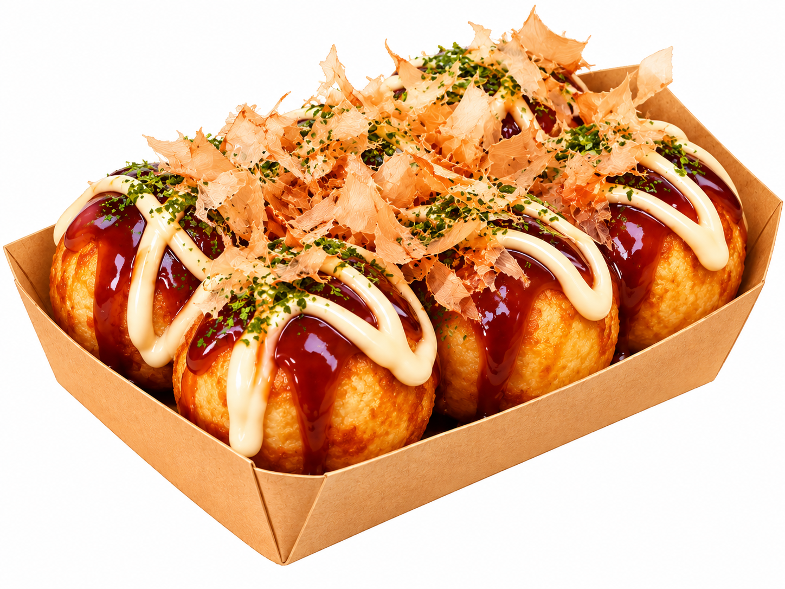

Jajanan favorit dan resepnya, dari dapur ke hatimu.
Selamat datang di Dapur Jajan! • Resep terbaru: Takoyaki Isi Sosis ala Rumahan dan Cilor Kenyal Bumbu Pedas • Daftar jadi Anggota Dapur dan bagikan resep jajan favoritmu • Jajan sehat, jajan hemat, jajan bahagia
Gallery

Takoyaki Isi Sosis ala RumahanCilor Kenyal Bumbu Pedas